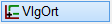
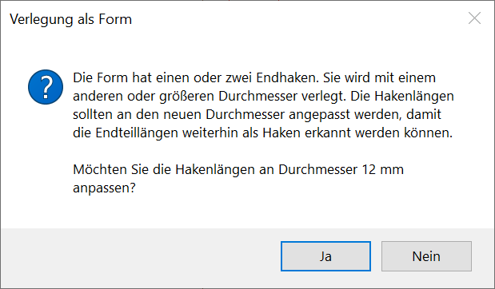
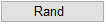
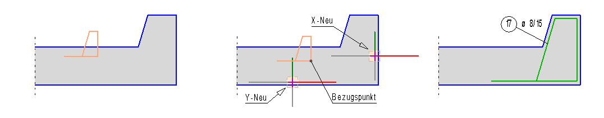
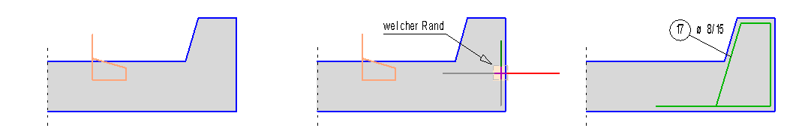
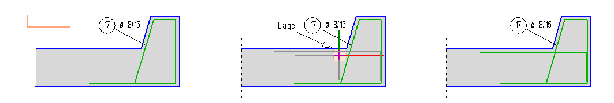

")

Die Verlegung als Form stellt den ersten Stab einer Staffel von Stäben in der Tiefe dar. Die notwendigen Angaben sind abhängig von der gewählten Vorgehensweise.
·Die folgende Meldung erscheint nach dem Bestätigen des Verlegefaktors, wenn eine neue Position mit einem größeren Durchmesser erzeugt wird:
 |
Sie haben die Möglichkeit, die Hakenlängen der Auszugsform an den neuen Durchmesser anzupassen.
Siehe: Hakenlängen an den Stabdurchmesser anpassen
So wird's gemacht:
§Wählen Sie über die Schaltflächen oben links (unter der Eingabezeile) die Art der Vorgehensweise:
|
Der Verlegeort wird über die X- und Y-Koordinate eines Bezugspunktes beschrieben. |
 |
Der Verlegeort wird durch Anklicken einer Linie (=Rand) bestimmt. Die Lage zum Rand kann dem Übersichtsfenster entnommen werden. |
|
Der Verlegeort wird ohne Linienbezug gewählt. Hier müssen Sie den Verlegemaßstab angeben. |
.png)
.png)
Verlegeoptionen
.png)
Der Verlegeort wird über die X- und Y-Koordinate eines Bezugspunktes beschrieben.
[Form setzen]
§Fahren Sie mit dem Cursor die Form an eine Stelle in der Nähe des Verlegeortes. Legen Sie die Form mit Linksklick ab.
[DrehWi]
Wenn die Ausrichtung der Form in Ordnung ist, können Sie diese mit Rechtsklick bestätigen. (Sehen Sie sich zur Kontrolle das Übersichtsfenster im Funktionsbereich an).
§Geben Sie einen Winkelbetrag ein und bestätigen Sie mit der Eingabetaste. oder nutzen Sie die Ausrichtungsoptionen, um die Ausrichtung zu korrigieren.

|
||||||


[SpiegelWi]
Nach dem Drehen kann eine zusätzliche Spiegelung erfoderlich sein, um die endgültige Ausrichtung zu erzielen. Verwenden Sie die Eingaben wie bei [DrehWi].
[Bezugsp. an Form]
§Klicken Sie einen Bezugspunkt an der Form an. Dieser Punkt wird im Folgenden in der Geometrie platziert.
|

Gibt es an der Form keinen Punkt, der direkt an der Betonkante platziert werden kann, können Sie einen Hilfspunkt setzen. Dieser wird später automatisch gelöscht.
[X-neu]; [Y-neu]
§Klicken Sie für den X-Wert die Betonkante auf der Seite an, auf der die Betondeckung berücksichtigt werden soll. [X-neu].
Die Linienkennung und die voreingestellte Betondeckung werden in die Eingabe geschrieben.
§Geben Sie nach der Linienkennung den Wert für die Betondeckung mit dem entsprechenden Vorzeichen ein und bestätigen Sie mit der Eingabetaste.
Mit Rechtsklick können Sie die voreingestellte Betondeckung übernehmen. Wenn kein Abstand angegeben werden soll, geben Sie als Differenz 0 (Null) ein.
§Gehen Sie für die Angabe des Y-Wertes, wie bei [X-Neu] beschreiben, vor. [Y-neu].
Die Form wird im Maßstab der Geometrie gezeichnet.
|
Hinweis: |
|
Wenn Sie durch |

 auf die X- / Y-Werte zurückgehen und für den Bezugspunkt einen Hilfspunkt gesetzt haben, müssen Sie auf die Eingabe für den Bezugspunkt zurückgehen, um den Hilfspunkt erneut zu setzen!
auf die X- / Y-Werte zurückgehen und für den Bezugspunkt einen Hilfspunkt gesetzt haben, müssen Sie auf die Eingabe für den Bezugspunkt zurückgehen, um den Hilfspunkt erneut zu setzen![Verlegetiefe]
Hier ist die Eingabe einer Länge möglich, die in die Tiefe der Zeichenebene weist.
§Geben Sie die Verlegetiefe an und bestätigen Sie mit der Eingabetaste.
[Verlegefaktor]
§Bestätigen Sie den Verlegefaktor ÑEinsì mit Rechtsklick. Ein Faktor größer als Eins ist an dieser Stelle nicht sinnvoll. Als Erhöhungsfaktor können Sie den Bauteilfaktor nutzen.

Der Verlegeort wird durch Anklicken einer Linie (=Rand) bestimmt. Die Lage zum Rand kann dem Übersichtsfenster entnommen werden.
[Randabstand]
Als Randabstand wird der nomc-Wert vorgeschlagen. Den Abstand können Sie mit Rechtsklick bestätigen.
§Geben Sie einen Wert ein. Wenn dieser negativ ist, wird der Abstand zur anderen Seite gemessen. Schließen Sie die Eingabe mit der Eingabetaste ab.
[Welcher Rand]
§Klicken Sie den Rand auf der Seite an, auf der die Form mittig gesetzt werden soll.
[Verlegetiefe]
Hier ist die Eingabe einer Länge möglich, die in die Tiefe der Zeichenebene weist.
§Geben Sie die Verlegetiefe an und bestätigen Sie mit der Eingabetaste.
[Verlegefaktor]
§Bestätigen Sie den Verlegefaktor ÑEinsì mit Rechtsklick. Ein Faktor größer als Eins ist an dieser Stelle nicht sinnvoll. Als Erhöhungsfaktor können Sie den Bauteilfaktor nutzen.

Der Verlegeort wird ohne Linienbezug gewählt. Hier müssen Sie den Verlegemaßstab angeben.
[Maßstab]
-Die Maßstäbe der Auszugsform und der aktuelle Zeichnungsmaßstab müssen nicht mit dem gewünschten Verlegemaßstab übereinstimmen.
-Den vorgeschlagenen Maßstab, in dem der Auszug gezeichnet ist, können Sie mit Rechtsklick übernehmen.
-Um den Maßstab eines Elements zu übernehmen, klicken Sie das entsprechende Element an.
§Geben Sie einen passenden Maßstab ein und bestätigen Sie mit der Eingabetaste.
[DrehWi]
Wenn die Ausrichtung der Form in Ordnung ist, können Sie diese mit Rechtsklick bestätigen. (Sehen Sie sich zur Kontrolle das Übersichtsfenster im Funktionsbereich an).
§Geben Sie einen Winkelbetrag ein und bestätigen Sie mit der Eingabetaste. oder nutzen Sie die Ausrichtungsoptionen, um die Ausrichtung zu korrigieren.
|
||||||
[SpiegelWi]
Nach dem Drehen kann eine zusätzliche Spiegelung erfoderlich sein, um die endgültige Ausrichtung zu erzielen. Verwenden Sie die Eingaben wie bei [DrehWi].
[Lage]
§Schieben Sie die Form an die gewünschte Stelle und legen Sie diese mit Linksklick ab. Liegt der Cursor auf einer Linie oder einem Kreis, werden diese Elemente nicht gefangen.
[Verlegetiefe]
Hier ist die Eingabe einer Länge möglich, die in die Tiefe der Zeichenebene weist.
§Geben Sie die Verlegetiefe an und bestätigen Sie mit der Eingabetaste.
[Verlegefaktor]
§Bestätigen Sie den Verlegefaktor ÑEinsì mit Rechtsklick. Ein Faktor größer als Eins ist an dieser Stelle nicht sinnvoll. Als Erhöhungsfaktor können Sie den Bauteilfaktor nutzen.
